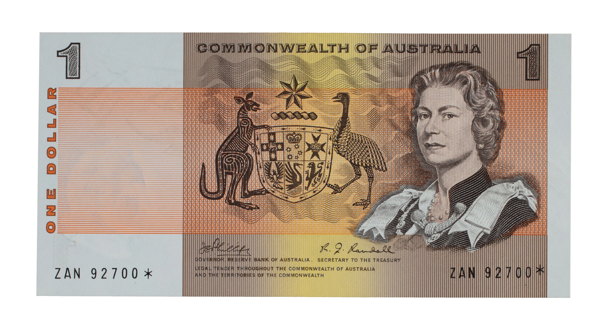
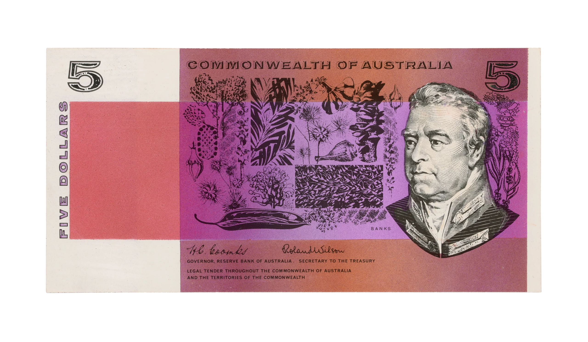
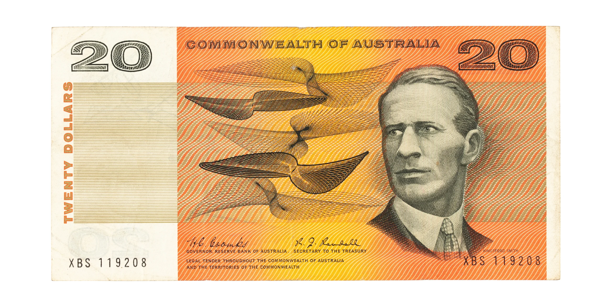

Banknotes
Australian Decimal Banknotes (1966)




The transition to decimal currency was one of the most significant national projects of the 20th century in Australia. The move away from the British pound system required not only technical precision but also a new visual identity that reflected the nation's cultural heritage. The Reserve Bank of Australia tasked Andrews with designing the first decimal banknotes, a responsibility that carried enormous weight in terms of national representation and functionality.
Andrews’ work on the decimal banknotes was crucial because it introduced a modern, distinctly Australian aesthetic to the country’s currency. Previous banknotes had largely followed British traditions, but Andrews saw an opportunity to create something uniquely Australian. His designs celebrated national identity by featuring prominent historical figures, Indigenous motifs, and representations of Australia’s natural environment. By doing so, he helped to redefine how Australians visually perceived their own currency.
Each of Andrews’ banknotes was meticulously designed to balance security features with aesthetic appeal. His use of intricate background patterns not only enhanced security against counterfeiting but also added visual depth to the designs. He employed vibrant colours to distinguish different denominations and incorporated fine typography and illustration techniques that reflected his deep understanding of graphic design. His attention to detail ensured that the banknotes remained both functional and visually compelling.
Reference